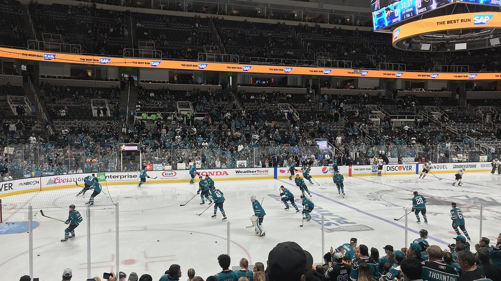

Sharks Injury Report
Who is on injured reserve, who is out and who is day to day for San Jose, kept current through the season at this one address.

Check this page before a Sharks game. Every player on the injury report is here with his position, the injury, his status, when he is expected back and when it last changed. It refreshes several times a day, so the link never changes.
The current report
Updated Fri, Nov 13, 3:05 PM Pacific. 3 on injured reserve, 0 out, 1 day to day. Next game: at Utah Mammoth, Sat, Nov 14, 6:00 PM Pacific.
| Player | Pos | Injury | Status | Expected back | Last update |
|---|---|---|---|---|---|
| Kyle Keyser | G | Upper Body | Injured Reserve (non roster) | About 3 weeks (est. Dec 1) | Mon, Sep 28 |
| Igor Chernyshov | LW | Upper Body | Injured Reserve | Est. Nov 14 | Wed, Oct 28 |
| Quentin Musty | LW | Upper Body | Injured Reserve (non roster) | About 3 weeks (est. Dec 1) | Mon, Sep 28 |
| Player | Pos | Injury | Status | Expected back | Last update |
|---|---|---|---|---|---|
| Alexander Wennberg | C | Undisclosed | Day to day | Day to day | Fri, Nov 13 |
Quick answers
Who is out for the Sharks right now?
As of Fri, Nov 13: Igor Chernyshov (injured reserve), Quentin Musty (injured reserve) and Kyle Keyser (injured reserve).
Who is questionable or day to day for the Sharks?
As of Fri, Nov 13: Alexander Wennberg (day to day).
When is Igor Chernyshov expected back?
Est. Nov 14. He is listed as injured reserve (upper body), last updated Wed, Oct 28.
When is Quentin Musty expected back?
About 3 weeks (est. Dec 1). He is listed as injured reserve (upper body), last updated Mon, Sep 28.
When is Kyle Keyser expected back?
About 3 weeks (est. Dec 1). He is listed as injured reserve (upper body), last updated Mon, Sep 28.
How to read it
Injured reserve means he is out at least a week and is off the active roster. Non roster injured reserve is for a player hurt before the season started, and long term injured reserve is for a player out at least 10 games and 24 days. Out means he will miss the next game, and day to day means a minor problem, decided game by game.
Expected back is the latest timeline we can stand behind. When the update names one, like six weeks or two to three weeks, it shows here in plain numbers with the date it was reported. When it does not, you see the estimated return date carried on the league report, marked est. Timelines move, and this page moves with them. If nothing has been reported, it says no timeline yet. Practice participation is not shown: if the feed does not report it, we do not guess at it.
Where the numbers come from
Status, designation and injury come from the league injury report as published through ESPN, read automatically. Nothing in the tables is typed in by hand. When the team announces something the feed has not caught yet, it shows up here on the next refresh, usually within a few hours. See our editorial standards and corrections policy.
For more, see Sharks roster and depth chart and 2026-27 schedule.
Every Bay Area injury report
Every Bay Area team · 49ers · Raiders · Warriors · Giants · A's